Select your area of interest:
Home* Lap Steel* 3 String Guitar* "Regular" Guitar* Violin* Bass*Banjo* Mandolin* Ukulele* Home Recording* Links
Traditional & Progressive Open Back Banjo Design & Construction Information
Boucher Early Minstrel Banjo (construction guide on CD & full size plan available)Frank Profitt Mountain Banjo
Bluestem Mountain Banjo Nouveau
Bluestem Artisan Mountain Banjo
Bluestem Open Back Banjo Nouveau
Bluestem Wine Box / Hand Drum Banjo
Open Back Banjo Design Primer
General Banjo Construction Information
Open Back Banjo Setup Guide
“Why can’t I get this thing to play in tune?” (more than you wanted to know about equal temperament)
Bluestem Open Back Banjo (construction guide on CD & full size plan available)
Bluestem Workingpersons 11 Slot Head Open Back Banjo (construction guide on CD & full size plan available)
Bluestem Wood Top Banjo Information (full size plan available)
Bluestem Backstep Banjo; looking back and moving forward...
************************************
Assorted 5 String Banjo Construction Tips
************************************
First, be sure to visit the Shop Tour page (HERE) for ideas on equipping your own "minimalist" shop.Pot related information
Neck related information
Assembly and related information
Assorted Banjo-related tidbits that don't fit anywhere else...
POT RELATED INFORMATION:
Block Rim Construction
Rim layers can be formed easily using the method shown. I cut them with a miter saw, but they can be cut by any other means. I cut 8 segments with 22-1/2 degree angles, leaving the last segment with extra length. Seven segments are glued using slightly stretched painter's tape to hold them tightly together until dry. Cut the last segment for a perfect fit, hold it in place and mark the inner excess material. Cut away the excess material on the inside of the ring before gluing the final segment in place. This saves a LOT of time when sanding the rim to size. Glue the last segment in place and plane level when dry. I use the Wagner Safe-T-Planer in my drill press, but use whatever method you choose. Cut the outer profile oversize before gluing the layer in place.
Here's a quick youtube demo of using the Wagner Safe-T-Planer to surface a rim layer:
Rim Segment Layout Guide
Click HERE for a PDF guide that allows you to print out full size patterns for 8, 12, or 16 segment rims, 11" or 12" OD sizes, in either 5/8" or 3/4" wall thickness.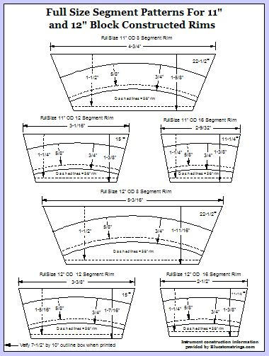
Rim Construction, a few "lathe-less" examples...
Here's an alternative to lathe forming a rim. The pictures should be more or less self-explanatory. The secret is to form a base with a precisely sanded outer diameter. The circular base rides against two guide boards located to the right and to the rear of the base and clamped securely to the drill press table. Slightly oversized segments are glued directly to the base and accurately sanded with an 80 grit drum sander. Adjust the right guide board to control "depth-of-cut". You should take multiple light passes until the desired dimension is reached. Use medium speed and keep your work moving to avoid burning the wood. Cut or plane away the base to reach the inner portion that could not be initially shaped with the sanding drum. Clean up the outside and inside surface with a random orbit palm sander fitted with a 220 grit disk. With a little care you can easily produce a rim that rivals its lathe-turned counterpart. The photos below show how this is done.Rim construction sequence is as follows:
1. Glue first (bottom layer) to a circular pattern formed from void-free plywood to serve as a sanding guide. I always use a few grains of salt on the glue surface to keep layers from sliding when clamping pressure is applied. If your layers are level they can be clamped with pressure exerted from a central point above the rim.
2. Sand outer diameter of first layer to match circular sanding guide. The inside diameter of this layer is sanded as the last step.
3. Glue second layer in place.
4. Sand outside diameter of second layer to match first layer.
5. Sand the second layer inside edge to the appropriate diameter and outside diameter to match the second layer.
6. Glue the third layer in place.
7. Sand the third layer inside and outside diameter to match the second layer.
8. Glue the top layer in place.
9. Sand the top layer inside and outside diameter to match the third layer.
10. Remove the circular sanding guide. Excess material can be removed from center and the remaining material can be planed away.


Another Block Rim Construction Idea...
Here’s a quick picture to demonstrate another idea for an easy alternative to lathe use when making a rim. Any size rim with any wall thickness can be created this way. Each segment is precut to the desired OD and ID plus a little extra for sanding purposes. The first segment’s ends are sanded and it is glued to a plywood disk whose outer edge has been sanded to the desired finished O.D. Each additional segment has both ends sanded prior to adding it to the rim. The mating end is additionally sanded to form a more or less perfect joint when it is added to the previous segment. The salt shaker is used to sprinkle a few grains on the glue surface to prevent the segment from shifting out of place when clamp pressure is applied. If a small disk sander is used, the joints can be mated to create an almost invisible glue line. When all the layers are complete the plywood form can be cut or planed to remove it or it can be used as a reference to sand the rim using a 2” sanding drum mounted in a drill press as shown above.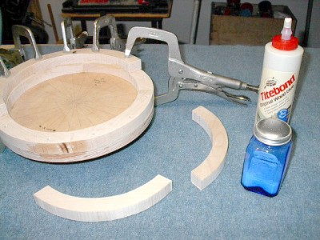
Slow n’ Easy Laminated Rim Construction, another lathe-less rim making alternative…
There are many ways to make a laminated rim; here’s a photo that encapsulates many of the ideas associated with yet another alternative to lathe-based rim construction.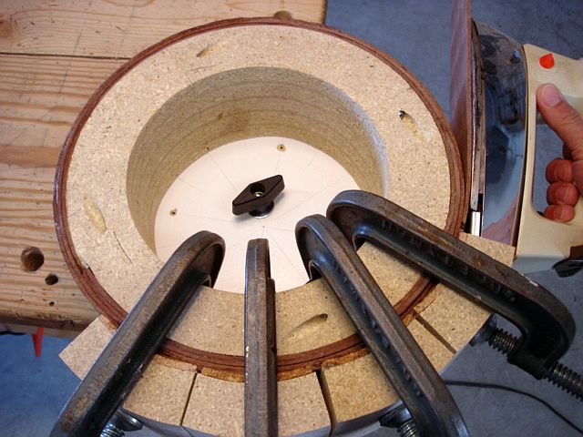
Constructing The Form:
The form shown in this example is a simple internal form made of 5 layers of particle board that has been stacked and glued, cut into four sections, and joined together by recessed screws across the joints. One of the four quadrant sections has its face tapered inward the exact thickness of the lamination layer to serve as the “starting area” for the first layer. This starting end of the first layer will be sanded away to form a smooth inner transition after the rim is completed. This method of starting the first wrap will ensure that the following layers will be full thickness so the rim will be as rigid as possible. This inner rim layer “tuck” and associated tapered quadrant of the form can be seen at the lower left portion of the photo. Wrapping and clamping layers solidly against an internal form is a good way of ensuring that layers will be as gap-free as possible, as there is a natural tendency for the layers to conform tightly as they are bent around the form. This technique does require careful planning so the final outer layer will end up at the desired outside diameter after the rim has received any final truing and surface sanding. A bit of careful planning will be necessary to address that, and we’ll take care of all that ciphering next.
Calculate the required outer diameter of the form by subtracting two times the thickness of your rim walls from the desired outside diameter of the completed rim.
In the example shown the desired rim size was 12” with 1/2” rim wall thickness comprised of four 1/8” thick layers, so the outer diameter of the form was 11” and was made of five stacked and glued layers of particle board. The form walls were made 1-3/4” thick, enough to resist deformation under clamping pressure, but allowing enough space so the clamp bodies have enough clearance at the inside area of the form. The form is made in four sections and screwed together, with one quadrant’s face tapering inward to form the “ramped start” for the first layer. If one of the quadrant sections is mated to its adjoining sections with slightly tapered end cuts it will be very easy to remove the form from the rim by removing a few screws and giving the tapered section a tap to loosen it. The surface of the form is wrapped with stick-on shelf liner so the rim won’t be accidentally glued to it. Shelf liner isn’t very sticky, so the ends of the shelf liner are held to the form with masking tape. The form is mounted to a backing plate that is made to match the desired rim diameter. This plate is held to the work bench by using a bolt through the bench top and a large knob to secure it. This allows quick repositioning of the form as the layers are added.
Making The Rim:
The laminations were made 48” long by 1/8” thick with a 3” width. Plenty of extra material allows the rim to be made wider than necessary and trimmed to the desired finished width. Each layer is dampened with a wet sponge and an ordinary household iron is used to apply heat to easily bend each thin lamination. Clamping cauls that roughly match the desired rim outer diameter are lined with 1/4” thick cork with heavy duty double stick carpet tape. Several of these will allow the rim to be formed and glued a section at a time to eliminate the rush of trying to form a perfect rim from several layers all glued simultaneously. It is recommended that each layer is bent and clamped in place before gluing so the layer won’t spiral too far out of alignment. After a portion of the layer is bent and clamped in place to ensure alignment then the first portion can be unclamped and glued. Continue the bending and clamping until the layer is complete, trimming the length as necessary. The joint ends are butted together as the next layer is added. If care is taken to make a tight and gap-free rim, trimming a bit of the end layer overlap and sanding of the outside surface will produce the desired outer diameter and the extra material forming the inside taper of the starting lamination can be trimmed and sanded to true up the inner diameter once the rim top and bottom are trimmed to the desired rim height. Rounding over the rear edges and forming the top of the rim completes the project.
Combining block And laminated layer construction techniques
I also often use a top bearing guided carbide router bit to pattern route the ID and OD to each previous layer. I use this technique in combination with adding highly figured overlay veneers to the inside and outside surfaces of a rim. By combining block and layer construction you can obtain rims of unsurpassed strength and stability while maintaining a 1/2" or 5/8" wall thickness. The photos below graphically illustrate the technique and the rim variations that can be achieved by combining the techniques.
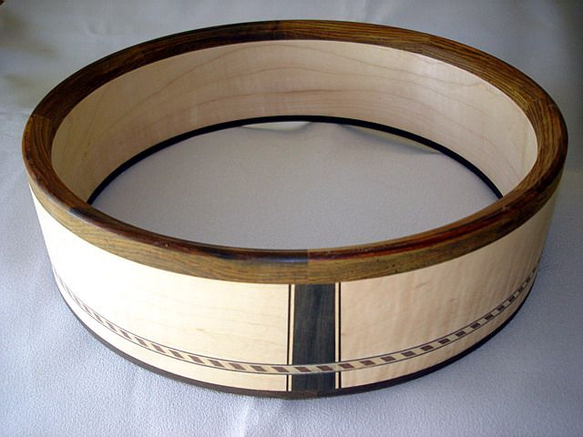
Drilling shoe mounting holes in the rim
Drilling the rim for shoe mounting holes can be done using this simple drill press fixture. An extension arm is clamped to the side of the drill press table to permit the holes to be drilled perfectly perpendicular to the rim face. The top of the overhanging arm is rounded to match the inner diameter of the rim to prevent tear out when the drill bit breaks through the inner face of the rim.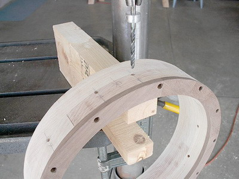
Another method, shown in the photo below, utilizes a hand drill. A guide block with rear face curved to match the rim outside diameter is fastened to the bench top. Alignment marks are drawn on the rim face and the top of the guide block to accurately locate the shoe mounting hole positions. The rim is clamped in place against the curved face of the drilling guide block using a curved sacrificial guide against the inner rim surface. The shoe mounting hole can then be drilled using the guide hole with no tear out of the rim's inner or outer surfaces.
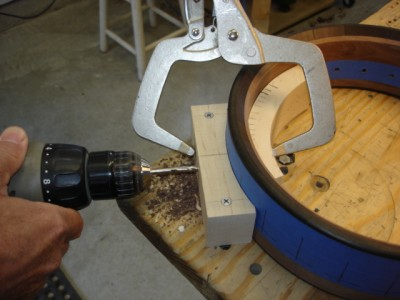
The photo below shows a "deluxe" jig incorporating a Bessey horizontal quick clamp to hold the rim in place while drilling. The sacrificial board has 1/4" trimmed off its bottom as each new hole is drilled. It's VERY quick!
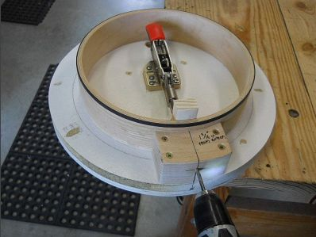
Routing Rim Ledges
There are many occasions when the need arises to create a simple ledge at the inside or outside of the rim edge. The method shown here can be adapted to cut shallow ledges for tone ring skirt overhangs, recesses for edge binding, ledges for rolled brass tone rings, etc. The other end of the guide has a convex radius for forming ledges in the rim's inner face. The first cut should be shallow to reduce the risk of tear-out. Normally the work would be rotated past the carbide cutter in a counter-clockwise direction, but the shallow cut can also be "climb cut" to totally eliminate any chance for tear-out of the rim face.The photo shows a multi-layer laminated rim with full 1/16" quartersawn oak outer face lamination being routed for a 1/8" by 1/8" rounded outer walnut binding.
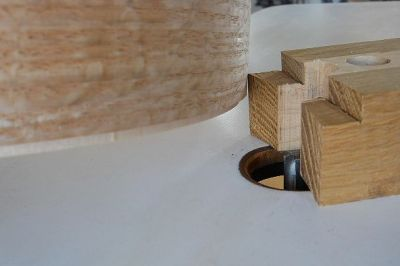
Lathe Work
There's a ton of information about lathe work at other banjo-related sites, so I'll keep my comments here to a minimum.I don't find a need to do all that much lathe work, but occasionally I'll do a rim operation that is slightly easier to do on the lathe than by another method. I use a variety of methods to fasten a rim to a round backing attached to a face plate. The standard method I use is to extend screws through the rear of the face plate backer into the rim edge. These are placed where they will be covered in later operations and are covered further in some of my construction guide materials.
I'm not a big fan of spending a lot of money, and the lathe shown here was purchased for less than $200 new and fitted with the 2" riser blocks shown to gain additional swing capacity over the bed. It does everything I need it to do.
The photo below demonstrates how a thin wall rim can be effectively mounted. The inner disk shown is fastened to the larger backer disk and turned so the rim slides with a fairly tight interference fit over its edge. The inner spanning board is fastened through two small countersunk holes where the dowel stick and end bolt will eventually be located. It is then an easy matter to draw the inner spanning member down with a couple of screws to pull the rim tightly to the larger backing plate.
The thin laminated rim shown in this example is quite rigid, and the two screws lock the rim firmly in place. It can be quickly removed and turned over to work the opposite side. If there is any play in the fit a wrap of masking tape around the inner disk will generally take care of it.
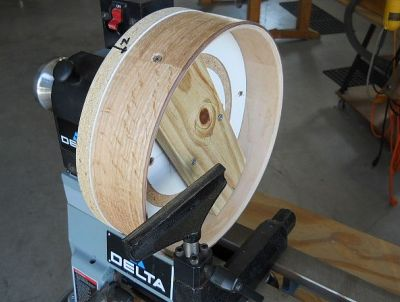
Making Your Own Raw Brass Bracket Shoes (...and other alternatives)
Making your own raw brass hardware is a very satisfying option for a number of reasons. Brass works and polishes easily, and can be patina finished with one of many commercial products that are commonly available.A complete guide to making your own raw brass shoes, as well as other shoe design and purchase options can be found HERE.
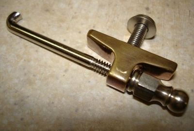
Polishing Raw Brass Hardware
Here's a quick youtube to demonstrate the polishing of raw brass hardware:NECK RELATED INFORMATION:
Fret Board Design & Layout
Go to the "Traditional & Progressive Design & Construction Information section for a complete method of fretboard design and layout.Wfret, The fret position calculator that prints full size templates!
Someone is always trying to produce a "better" version of this program, but the truth is Jon Whitney's Wfret does everything that's necessary in a simple and easy to use program. WFret produces accurate layout of fret locations as well as full size templates for any type of fretted musical instrument. Choose your desired scale length and number of frets and Wfret spits out a chart of fret position measurements and an actual printed full size template if desired. It runs on your machine with no internet connection, Java script, or anything else necessary. I often copy the chart information and paste it into another application when I'm working on instrument CAD drawings or other ancillary information. Why can't more people produce this kind of stuff? I supply Wfret on my CDs with Jon's gracious permission, and the zipped installation file can be found with a quick Google search.Click HERE for a download link for the zipped installation file for Wfret. Don't forget to tell Jon thanks!
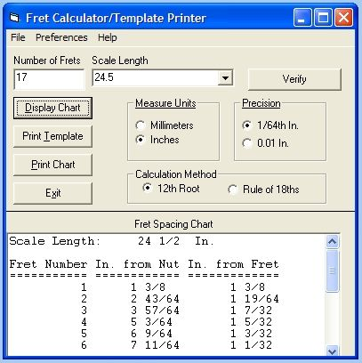
Simple Excel-based fret position calculator:
Here is my own version of the many popular Excel-based fret spacing calcularors available on the web. To use it, double click cell B1, type in the desired scale, hit enter, and print out the resulting chart. There is even a full decimal equivalence chart provided so the decimal values indicated can be easily converted to common fractions if desired.Click HERE for a Excel spreadsheet for calculating fret positions for any scale length and up to 24 frets. This is quick and easy to use if you're just looking for the actual measurement values.
Full Size Fret Layout Guide Sheets
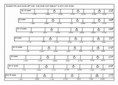
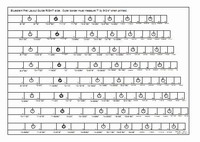
Click HERE for the left side AND HERE for the right side of two PDF files that are designed to be printed and physically joined to make a unique full sized template for accurate layout of fret and position marker locations when constructing banjos and other musical instruments. Several scales are represented to choose from. The unique properties of the PDF files allow these patterns to print accurate representations of the scale positions. Save the files to your local hard drive and they can be printed out whenever the need arises. When printing the 2 files make certain that the "no print scaling" is selected in the print dialog box and verify by measurement that the borders have been printed to be 7" by 9-3/4". This will ensure that the layout patterns are sized correctly.
Carefully trim the left border of the RIGHT layout guide, match it to the right side BORDER of the LEFT layout guide and tape them together. Fold lengthwise at the top of the desired scale and transfer the locations directly to your fret board blank. The 24 frets shown are more than the number needed for banjo use, but the guide can also be used for other types of fretted instruments.
Fret Board Slotting Saw
My current saw is based on an inexpensive Kobalt sliding miter saw. A small special purpose slotting blade (Thurston Manufacturing Company #J-034 .023” by 2-3/4” diameter 1” arbor 72 teeth screw slotting blade McMaster-Carr #3062A31) is adapted to the saw using a reducing bushing and spacers fitted between the saw arbor flanges as shown.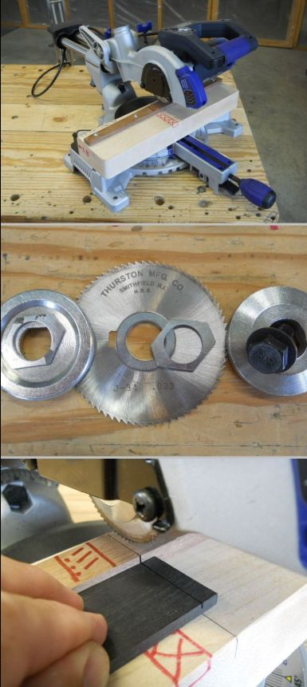
Tunneled Fifth String Design
I've found that small gauge stainless steel micro-sized tubing to be ideal tunnel material. I use 16 gauge micro tubing available from McMaster Carr at around 5 dollars for 12". This stuff is SMALL at 1/16" outside diameter and fits easily in a 3/32" channel routed between the fret tang and the bottom of the fret board before it is glued in place. It bends easily with a little care and has a really nice polished internal surface.I've found it is best to have the tunnel exit at a very low angle between the fourth and fifth frets or alternately the fifth and sixth frets. The tunnel exit area resembles an elongated oval with a shiny edge when finished flush with the fret board surface. I opt for the fifth-sixth tunnel exit location because I prefer the sound of the fifth string with a bit less tension on it. The best tunnel path is directly below the fret tangs and exiting through a slot cut in the bottom edge of the nut. The micro tubing end is flush with the rear face of the nut and in a plane just above the peg head overlay.
A slot head design benefits from the tunnel bent slightly downward under the nut area and exiting in the tuner slot at a location that will enable the string to enter the tunnel in a straight line.
Whatever tunnel design and path you choose it is IMPERATIVE for smooth tuning that you form the channel in a way that presents a minimal amount of bend and friction points between the fifth nut and the tuner post. It's not that difficult to do, but requires a little design and planning to implement it in an effective manner. Think of the ideal string path being a straight line from the fifth string nut to the tuner post and try to deviate as little as possible from that ideal line. Here is a drawing to demonstrate some of the ideas presented above.
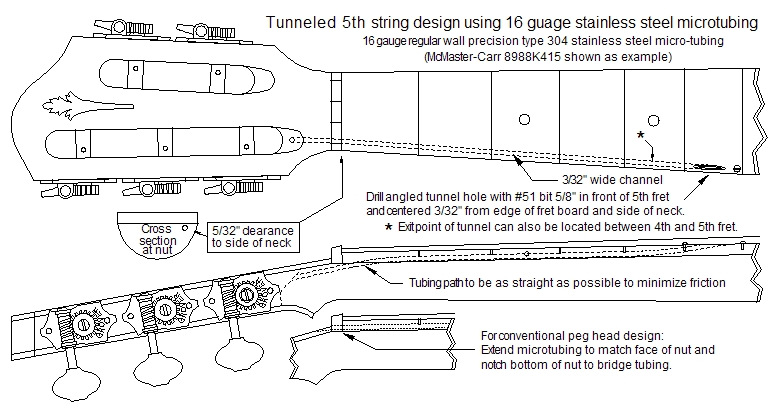
Neck Reinforcement Using 2024-T4 "Aircraft Aluminum" Bar Stock
I commonly use an 18” length of 1/4" or 3/8" thick 2024-T4 aircraft aluminum bar stock that tapers from 3/8” at the nut end to 5/8” at the heel end of the neck in my banjos, but it is not necessary in a well-built nylon strung banjo. Do NOT use ordinary aluminum bar! If you can flex the bar by hand it is not stiff enough to be effective in preventing neck bow. The 2024-T4 bar can be cut easily on the band saw, but avoid overheating the bar when cutting it. The top and bottom edges of the bar must be sanded smooth and flat. The bar is installed by routing a 1/4" or 3/8" wide channel that is cut 1/2" deep at the nut end and tapers to 3/4" deep at the heel end. The channel is routed using several progressively deeper passes until the desired depth is reached. I use a plunge router and a tapered guide to create the tapered channel. The bar is glued into the channel with a filler strip clamped over its top. The filler strip is finished off to be level with the top surface of the neck after the glue has dried; see the scraper holder below.An example of this type of bar is shown in the photo. I most often use 3/8" thick bar because I have my plunge router semi-permanently set up with a carbide 3/8" spiral up cut bit for several different operations, so using 3/8" 2024-T4 eliminates having to change router bits to accomodate 1/4" width bar.

Scraper Holder
Nothing beats a properly sharpened cabinet scraper for doing smoothing and leveling operations quickly and accurately. Make a nice wooden block to hold your scraper in an arch and you'll take all the work out of holding it properly. The handle shown below can be easily made by sawing the handle in half vertically by creating a long curved cut with a band saw. After the curved cut is made it is glued back together with a wooden shim between the two halves, leaving a void at the bottom to hold the scraper blade.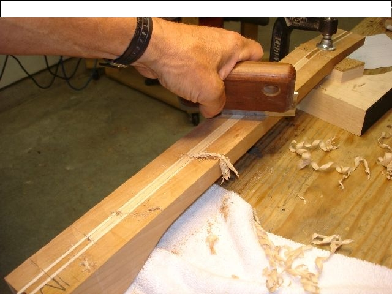
Banjo Neck Scoop
I create most scoops by pattern routing the double ogee shape using a 3/8" carbide cove bit with a 3/8" bearing mounted to the shaft to follow the pattern. I shift the pattern toward the heel and repeat the cut at 1/16" intervals until the scoop is wide enough to flip the neck over and finish up the scoop on a router table with a straight carbide bit.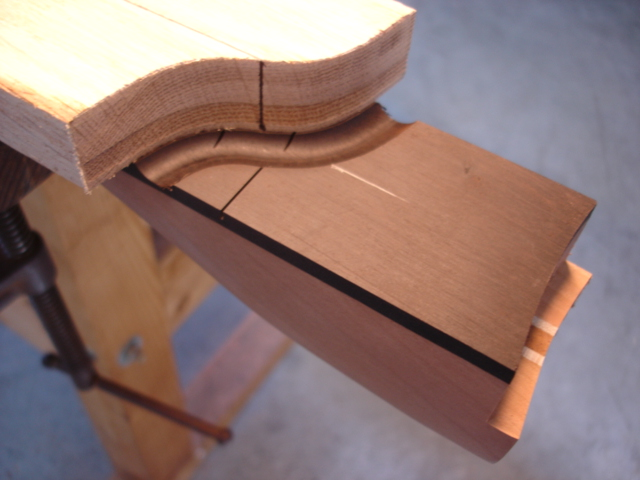
Banjo Peg Head Templates
These templates can be used to assist you when forming the outline contours of a 5 string banjo peg head. The peg head profiles print out as full size patterns within a 9" by 6" area of the page. The profile of your choice can be cut out and traced directly to the peg head area. These particular patterns are drawn with a 1-3/8" nut width indicated, but you may modify them easily for a narrower nut if desired. I've found the 1-3/8" nut with 1-1/8" string spacing to be quite comfortable, lending themselves well to clawhammer and other related styles of banjo playing.Click HERE for a Banjo Peg Head Profiles #1 in PDF format.
Click HERE for a Banjo Peg Head Profiles #2 in PDF format.
Click HERE for a Banjo Peg Head Profiles #3 in PDF format.
An example of what the templates look like:
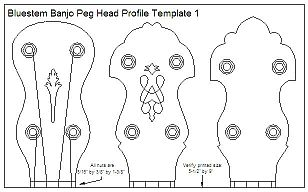
Shaping The Neck
The ability to easily shape a neck obviously improves with the number of necks you have done, but it's easy to produce a perfectly fine neck on your first attempt if you use care in shaping. Go slow and remember that it's easy to remove material; much harder to put it back on! Here's a printable shaping guide to assist you with the shaping of a neck. This is generally the procedure I use, and is a good balance between machine shaping and hand work with consideration given to minimising sawdust production.Click HERE for the full size PDF of the neck shaping guide shown below.
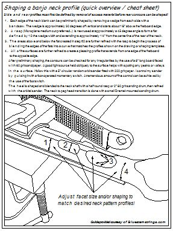
The picture below shows an alternate method of shaping a neck with a 2" diameter 80 grit sanding drum. It gets the job done, but it's dusty!

Banjo Neck Profile Template
This template prints out as a full size 9" by 3-1/2" pattern and can be used to assist you when shaping the contours of a typical 5 string banjo neck. Neck template shapes vary according to each particular banjo design, but it is easy to make templates by placing a clear or translucent semi-rigid plastic sheet over the plan you are using and tracing the outline with a fine tip permanent marker. The shapes can then be cut out and the resulting template can be used to assist you when shaping the neck contours.Click HERE for a typical 5 string banjo neck profile template in PDF format.
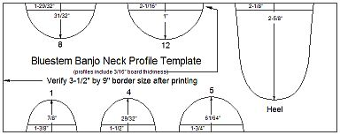
Banjo Neck Geometry
The asymmetrical neck and short fifth string of the "traditional" five string banjo necessitates a little tweaking of a few design parameters to create the best possible geometry, and ultimately a properly set up and easy to play instrument. Angle and skew of the neck heel profile are listed here because their importance needs to be emphasized; they are addressed individually in much greater detail in the "Open Back Banjo Design Primer" section."Neck Heel Angle"... The angular heel cut will determine the bridge height needed to produce the desired action over the upper frets.

"Neck Heel Skew"... With the heel center positioned on the pot centerline, the entire neck is “rotated” slightly clockwise (when viewed from the front) to place the third string nut slot directly over the pot centerline. This "rotation" is accomplished by slight adjustment of the heel profile when it is formed, as shown below.
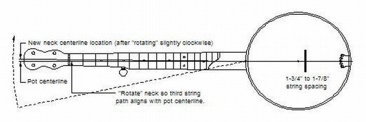
Profiling The Banjo Heel
Shown below are two of the many ways to form the heel profile. The first picture shows a jig that uses an oscillating spindle sander and easily creates a heel to rim fit that I used to only dream about! Any arrangement that presents the heel to the sanding drum at the correct radius and angle can be used, as shown in the second photo of a drill press based fixture.

ASSEMBLY RELATED INFORMATION:
The information in this section is mostly related to initial setup during assembly. If you're looking for more specific advanced setup information it can be found on the "SETUP" page which can be found HERE.My Method Of Neck Attachment
I most often attach my necks using a 3/8" diameter by 1-1/4" long barrel bolt (or cross dowel connector) housed within the heel of the neck. The connector has a 1/4"- 20 threaded hole across its center and is commonly referred to as a "furniture bolt connector" and sold at home improvement stores such as Menard's, Rockler, and many well-stocked hardware stores. My preferred brand is labeled and sold as "Midwest Fasteners Handi-Pack Cross Dowel Nut #87846".This method of attachment is very solid, provides for quick and easy vertical adjustment of the neck heel for action adjustment, and allows complete and unobstructed access to the neck heel for initially fitting the neck heel to the rim or at any later date should the need arise. You can find much more detail about the attachment method in the "Open Back Banjo Design" section.

Fitting Pegs To Peg Head
The method shown can be used to install any tuner of any type without damage to front veneer overlay or the rear surface. Drill a small dimple where the tuner will go, hold the guide and bit tip against the dimple, and clamp the wooden drill bit guide and backing board in place. Pull the bit out and check centering by looking down the hole with a small flashlight to ensure proper centering before actually drilling the hole. This particular hole is 9/32" for the violin tuners used on this banjo. A tapered reamer is next used to enlarge the holes to match the pegs exactly.
Here's an example of a jig used to accurately drill string post holes for slot head tuners.
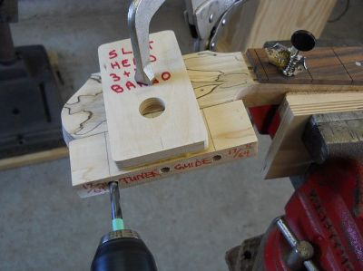
Attaching Strings
How to attach strings so they don't slip when tightened. The diagram should be more or less self-explanatory.
Nut Vise
Here is a simple vise that can be used to hold the nut while cutting and shaping slots. It uses a short piece of "fret board" at the front to simulate an actual fret board. A simple eccentric cam at the back locks the nut in place while it is being worked on.If you are using frets, a pencil which has been sanded so only half remains can be used to mark a line on the front face of the nut to use as a reference in determining how deep to cut the initial slots. Stay slightly above this line when preliminarily shaping the slots and do the final fitting on the instrument when the strings are added.
The nut slots are cut to be just above the level of the fingerboard (the thickness of a business card serves as a convenient guide) if you are building a fretless instrument.

Bridge Slotting and Shaping
I've found that bridge slotting can best be accomplished by filing a sharp "V" from both sides of the bridge with the intersecting points of the notch just a bit below the top edge and centered on the bridge thickness. If the notch is formed correctly a uniform breakaway angle is formed for the string with a distinct edge so there can be no buzzing created within the string slot.Since I make my own bridges I find it easiest to start with a bridge about 1/16" taller than my target string height and then match the lowest point of the notch to the desired height.
The bottom of the bridge is also formed in a slightly convex radius to match the very slight depression formed in the head under string tension. This will prevent the bridge from sagging in the future.
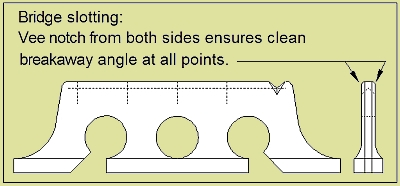
Here's a vise insert that allows a bridge to be safely held while refining the top , bottom, or ends of a bridge.

Fret End Finishing
Here's a quick youtube video to demonstrate how to make your own "safe edge" fret file and how to use it to finish fret ends:First Light
The term “First Light” is used when a newly constructed telescope is used for its first astronomical observation and I’ve lately realized that a newly assembled banjo could also be considered from a “First Light” perspective, when the instrument is strung up “in the white” for the first time to verify everything fits and works together as planned. I usually play the banjo for a few days in this form and note any final changes necessary before disassembling the instrument for sanding and finish application.Assorted stuff that doesn't fit in the other categories:
Inlay Work
Here are a few of the best things I've found for doing inlay work. My inlay saw is a heavy frame hacksaw that has sections of 3/8" key stock added to it for mounting the blades. The blades are retained by the clamping portion that is held with a Allan head cap screw. It makes blade changing quick and easy. The extra depth of the frame makes inlay cutting much easier, and works really nicely when cutting inlays that are affixed to the substrate material. The long arm clothes pin clamps are used to hold the inlay against the substrate overlay blank so superglue can be wicked around the inlay edge to glue it in place. You can visit my home page photos at www.Banjohangout.org to see examples of this very simple inlay method that eliminates routing of a matching recess when doing peg head inlay.I also use pre-cut logos and a few basic shapes from Andy DePaule's Luthiersupply.com because it's necessary to find the balance between cost and time spent to cut pearl. I can't purchase the pearl blanks for what it costs me to buy pre-cuts for; it's a no-brainer. I do a limited amount of custom inlay work when I want to, not because I have to, and that's a good place to be.
A small router setup (equipped with a carbide spiral bit) easily handles all the cavity routing tasks.
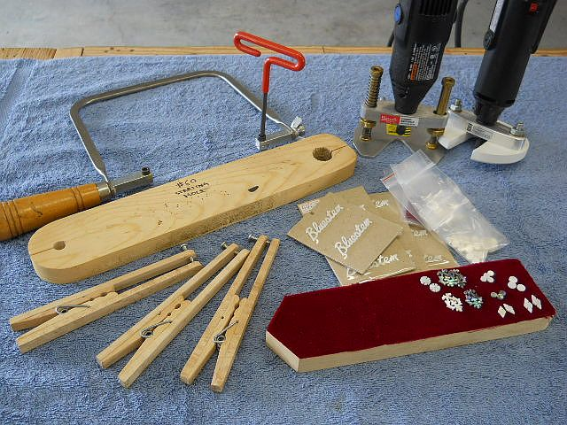
Chairs (You will eventually want to sit down...)
The Mity Lite folding chair on the left is cheap, sturdy, portable, VERY comfortable, and doesn't squeak. The price varies widely, but you can find them for as little as $20 each. Highly recommended!The chair on the right is the Sonus musician's chair, available from Brian Boggs. It will set you back about 140 times the cost of the Mity Lite, though...
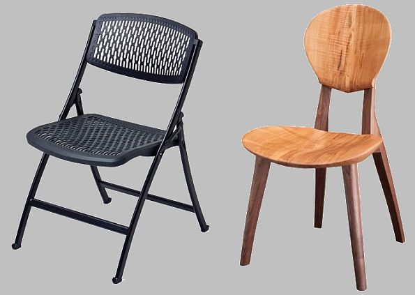
Make Your Own Banjo Tension Guage
Click HERE for the complete directions for constructing your own banjo head tension gauge using an inexpensive import dial indicator as shown below. Results are dependant on the strength of the plunger return spring, but I've had several folks e-mail to say that it works well.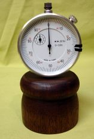
Logo Removal
From practical experience I’ve found that lacquer thinner removes a manufacturer’s logo thoroughly, leaving no trace behind when dry. I've removed dozens of logos this way with no adverse effects. It's best to liberally dab on with a cotton pad and use another slightly dampened cotton pad to remove it as soon as it dissolves. Any remaining traces of the logo ink can be cleaned off with a piece of freshly dampened paper towel.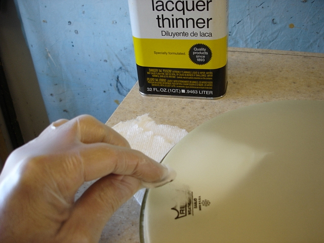
My take on left-handed instruments (rant warning...)
I'm STRONGLY left-handed and play a "right-handed" instrument, although I'm using the term very loosely as I'm convinced that there is no "handedness" in musical instruments, it's only a self-perceived concept. If handedness were important in stringed instruments, then what we refer to as right-handed instruments would actually be "left-handed" since the much more complicated manual dexterity necessary to play a fretted instrument is done with the left hand on a "standard right-handed" instrument.If a person's natural tendency is to favor a dominant hand to perform a task then it would seem totally natural to place the neck of an instrument in the left hand. Using guitar for an example, all the chord forming and individual melody development within a song is done with the left hand and the right hand can do as little as strum and still generate good accompaniment.
If one were to pick an instrument up and not try to “play” it, the dominant left hand would naturally be more suited to the complex tasks of chord formation and picking out melody, as it is the normal hand chosen for use when performing complex tasks. I personally believe lefties have a more difficult time with standard instruments because they come to the table with a preconception of needing a “mirror-image” of the right-handed world counterpart. That’s not an easy habit to break, and I understand if someone's feeling run counter to this. If you're brand new to playing an instrument you should at least give a "right-handed" instrument a try. You might just surprise yourself!
Many other musical instruments aren't so readily available in "lefty" configuration (i.e. piano, trumpet, etc. etc. etc.) and lefties seem to do just fine with the standard "Right-handed" version of these instruments. Breaking free of the handedness concept will greatly expand the lefty’s options where musical instruments are concerned.
Scissors? That’s a different matter altogether…